Artemis II Mission 2026¶
Warning
This story is work in progress and incomplete.
In 1962, in his legendary We choose to go to the Moon speech, then President John F. Kennedy said among many other things:
We choose to go to the moon. We choose to go to the moon in this decade and do the other things, not because they are easy, but because they are hard, because that goal will serve to organize and measure the best of our energies and skills, because that challenge is one that we are willing to accept, one we are unwilling to postpone, and one which we intend to win, and the others, too.
And later in this speech
But if I were to say, my fellow citizens, that we shall send to the moon, 240,000 miles away from the control station in Houston, a giant rocket more than 300 feet tall, the length of this football field, made of new metal alloys, some of which have not yet been invented, capable of standing heat and stresses several times more than have ever been experienced, fitted together with a precision better than the finest watch, carrying all the equipment needed for propulsion, guidance, control, communications, food and survival, on an untried mission, to an unknown celestial body, and then return it safely to Earth, re-entering the atmosphere at speeds of over 25,000 miles per hour, causing heat about half that of the temperature of the sun — almost as hot as it is here today — and do all this, and do it right, and do it first before this decade is out — then we must be bold.
More than 50 years later…
Humans will go to the Moon again. This time, they will not reach the surface and only fly around it, but that’s enough reason to be excited. I am and many others are as well, because for us, it’s a first time experience. I’ve only heard, seen or read the speech quoted above in recordings and when I was born in the seventies, the Apollo program had already come to an end. I am not exactly a youngling any more, which tells me how long ago in the past this achievement had happened. My parents witnessed Apollo 11 in awe, watched and listened to the unfolding drama with Apollo 13 less than a year later and when I was born another couple of years later, it all was over. The maybe greatest adventure of the human race has become history and, until to the very present day, was not attempted by any other human being.
Artemis 2 means a lot of first ever moments. It is the first time, a person who is not a United States of America citizen, will leave Earth’s orbit. So far, only astronauts from the USA have done this. This mission will also be the first time, a woman will leave Earth’s orbit and the first time, a person of color will reach the Moon.
The Mission¶
Artemis II is the second mission in NASA’s Artemis program which will culminate in humans landing on the surface of the Moon. The Goal of Artemis II is to test the technology upon which the entire program is based on. The mission took place from Wed, Apr 1, 2026 to Sat, Apr 11, 2026
It was originally planned to lift off in November 2024, but was delayed multiple times due to technical issues. In 2024 it was pushed back a year to September 2025, but multiple technical issues delayed the start until early 2026. Attempts to launch in February and March were canceled due to minor problems. It finally took off on April 1st, 2026.
Chronology of key events¶
Liftoff:
April 1, 2026, 22:35:12 UTC (6:35:12 p.m. EDT)TLI The TLI burn happened at
T+25h 14m.Splasdown (Landing):
April 11, 2026, 00:07:27 UTC (April 10, 5:07:27 p.m. PDT)
Glossary¶
This story contains a number of terms that might need definition or explanation.
- Artemis
The name of the entire program to land on the Moon. It consists of several missions, this story is about the second test mission and the first that will be crewed by humans.
- Artemis II
The name of the mission. The full NASA name is Artemis II Exploration Mission-2 (EM-2)
- SLS
The Space Launch System is a two-stage super heavy-lift rocket, developed by Boeing, Aerojet Rocketdyne, Northrop Grumman and the United Launch Alliance for the NASA. It consists of a first stage, which is powered by 4 RS-25 SSME engines and two solid rocket boosters [1] attached to the main fuel tank. Both the main engines and the boosters are proven technology from the Space Shuttle program. The second stage [2] is also reused technology from the Delta IV rocket.
Beginning with Artemis 4, the SLS will be using the Centaur V upper stage as second stage.
Since the SLS is only a temporary solution until one of the commercial projects is ready, the NASA tried to recycle as much old and working technology as possible for the Artemis program.
- Integrity
The chosen name for the Orion spaceship used by the Artemis II mission
- TLI
This stands for Trans-lunar Injection and is associated with the firing of the Orion capsule’s main engines. Consequently, it’s called a TLI-burn during which the Orion accelerates to a speed of 39.400km/h, that’s about 11 kilometers per second. This speed is needed to leave Earth’s orbit and go for a free return trajectory around the Moon.
- ESM
Short for European Service Module. During all time until the separation about an hour before landing back on Earth, the ESM is docked with the Crew Module. The ESM provides power via 4 large solar sails, contains all important life support systems for the 10 day long journey and the engines for acceleration and course corrections.
Built by Airbus SE (then EADS) on behalf of the ESA, the ESM is a modification of ESA’s ATV from the 1990s.
Trivia¶
The total length of the mission (time from liftoff to splashdown) was 9 days, 1 hour, 32 minutes and 15 seconds
All Artemis missions must launch from Launch Complex 39B, the same iconic site that also launched the Saturn V during the Apollo program and later handled 53 Space Shuttle missions.
Image Gallery¶
Most of these images are © by NASA. Credits and photographer (when available) are mentioned for each photo in the picture description. The images on this page have been reduced in size to conserve bandwidth. The links to the original NASA image gallery are provided below. There you can find some very high resolution (up to 8k) original images.
The original high quality and hi resolution images are on the NASA gallery.

{kind=link}
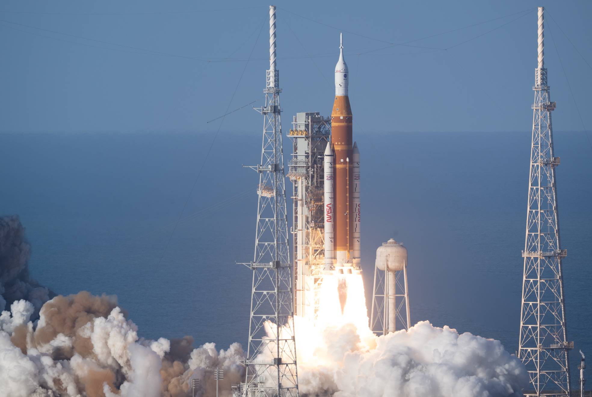
{kind=link}
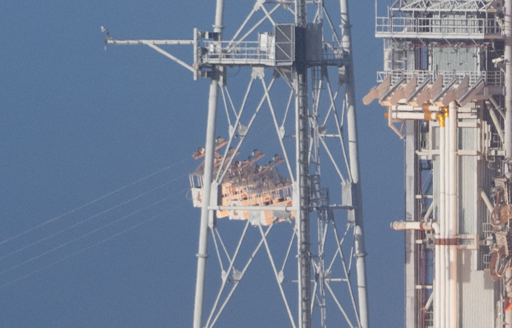
This is a set of baskets or cars, similar to what is used on some cable cars and ski resort lifts. In case of a catastrophic emergency during liftoff, the crew has a few seconds to board them and escape. These cars are about the size of an ordinary SUV vehicle and provide enough room for both the astronauts and other personell. They utilize a zipline-like system to travel down at high speed in order to quickly evacuate the zone of highest danger.
{kind=link}
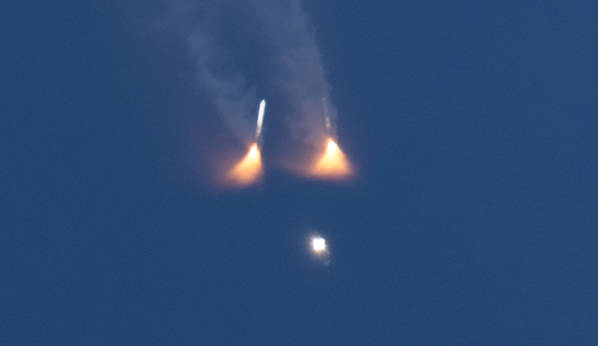

{kind=link}
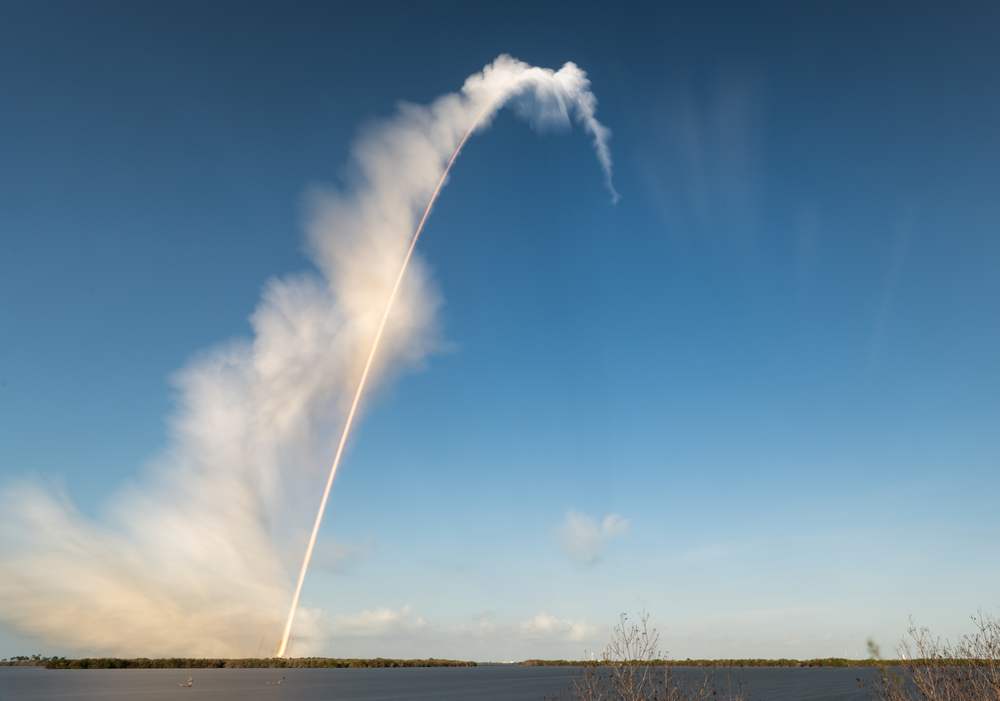
The original high quality and hi resolution images for the lunar flyby can be found on the NASA gallery.
{kind=link}
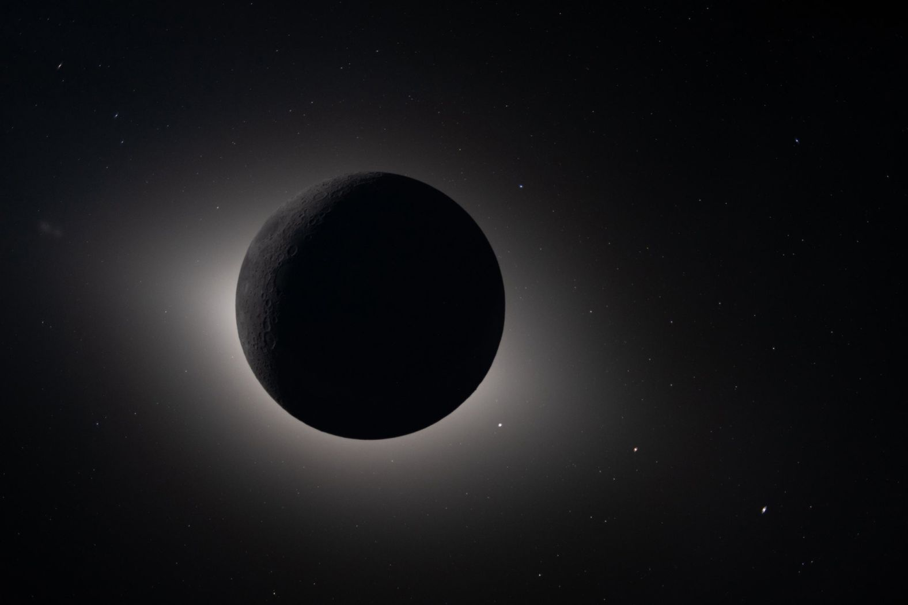


{kind=link}
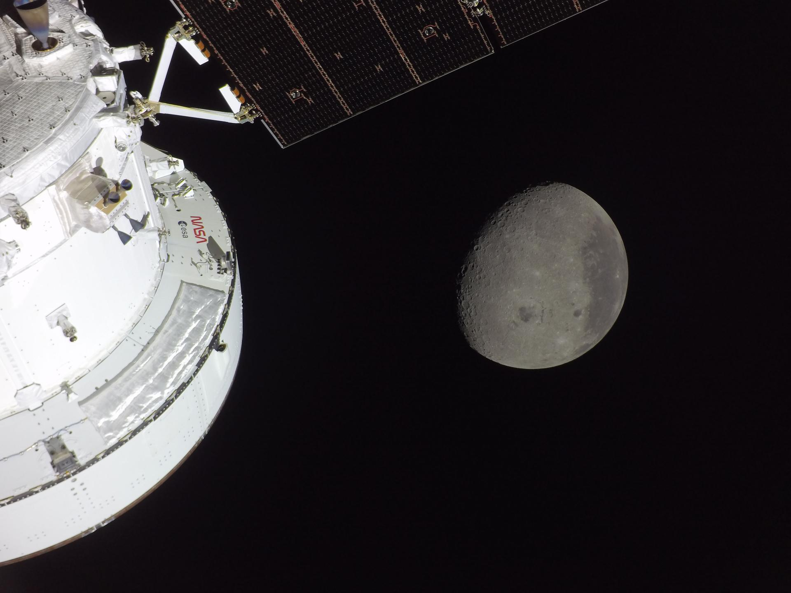
{kind=link}
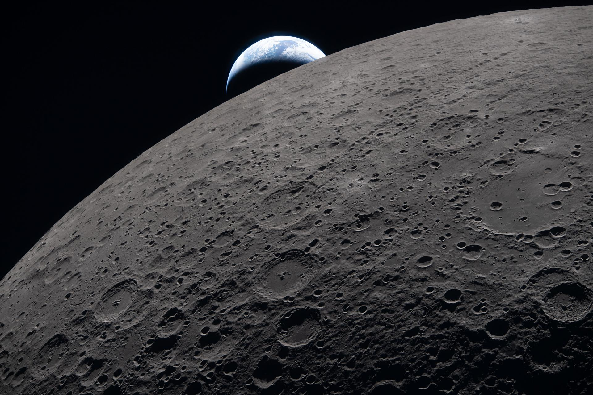
{kind=link}
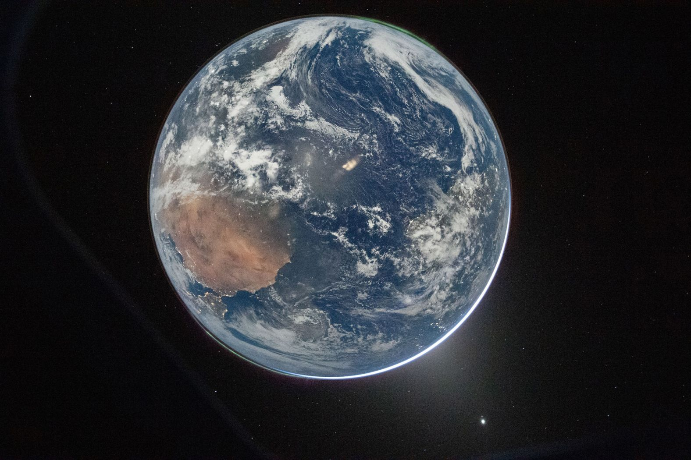
{kind=link}
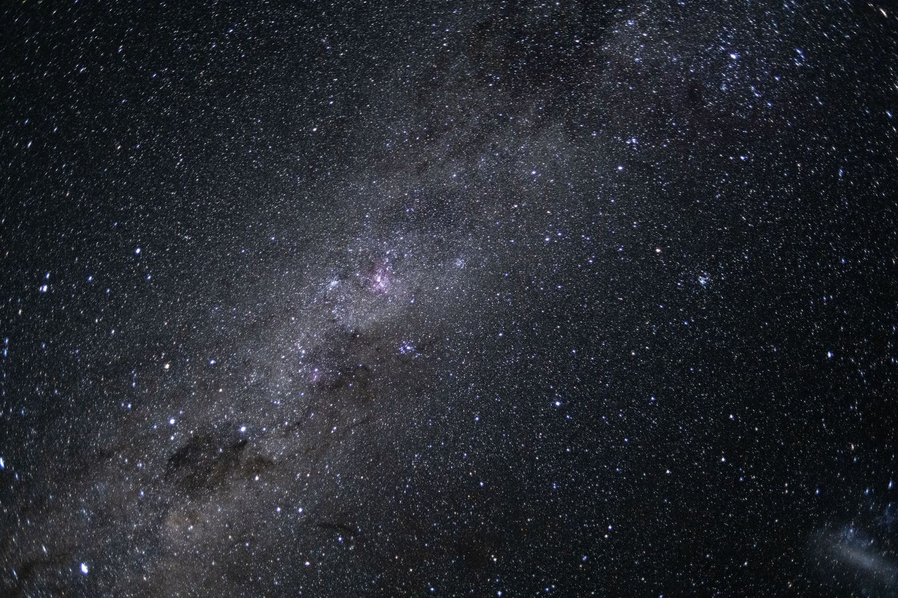
{kind=link}
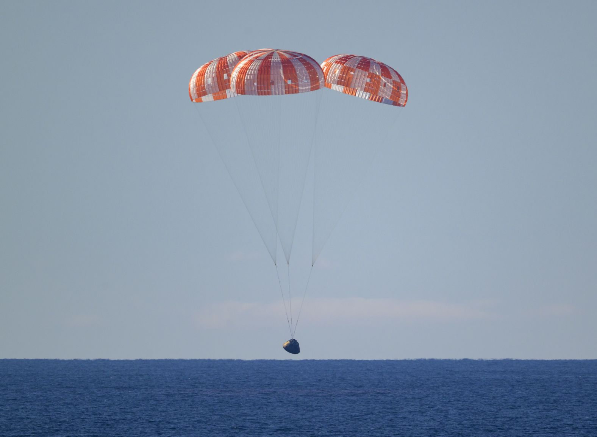
{kind=link}
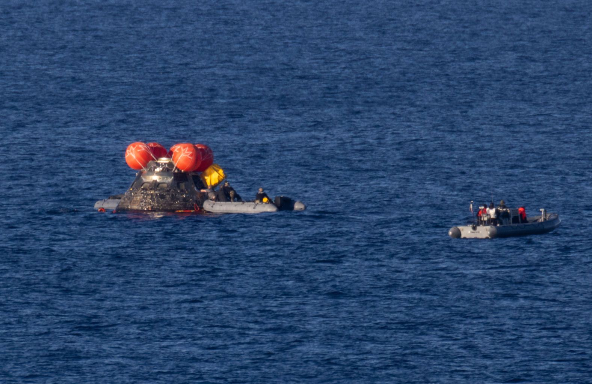